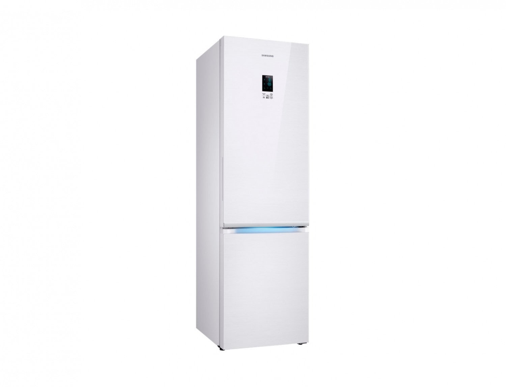
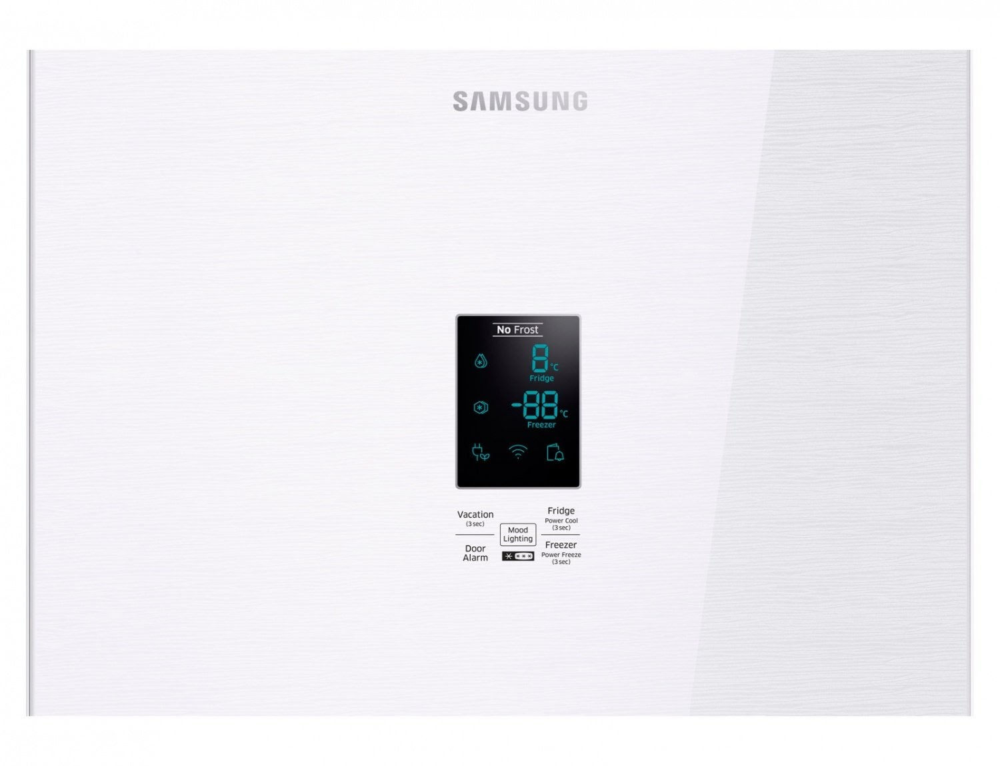
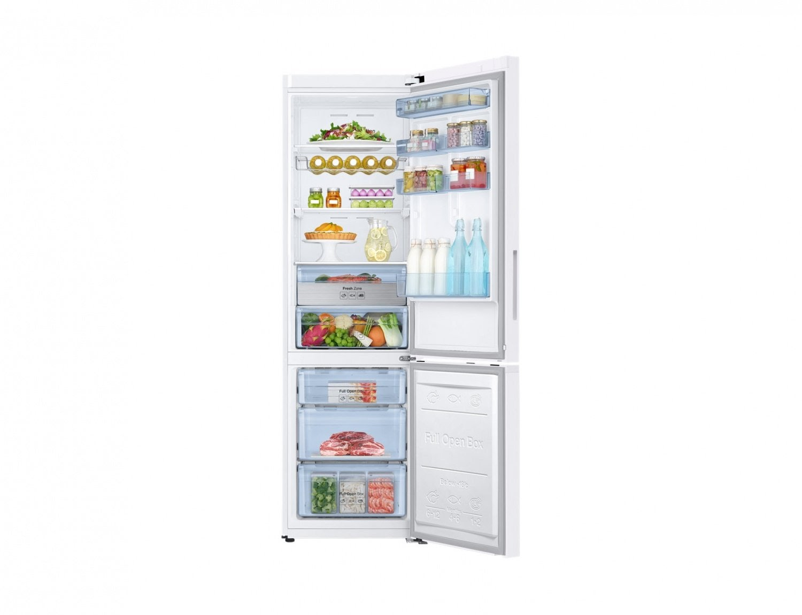

Superioritate externă
RB37K63401L este un model premium. Designul extravagant al ușii de sticlă este un element decorativ care subliniază modernitatea și stilul spațiului din bucătărie. Schema de culori pentru o unitate frigorifică independentă se numește „oglindă albă”. Congelatorul este situat în partea de jos. Proiectanții au mărit volumul util la 367 litri datorită grosimii pereților camerelor, în timp ce nivelul de izolație termică și dimensiunile externe au rămas neschimbate.

Multe moduri pe un singur panou convenabil
O matrice de senzori este amplasată pe ușa zonei de lucru, cu ajutorul căreia se reglează setările și se setează parametrii de funcționare: Schimbarea temperaturii în compartimentele frigider și congelator Răcire rapidă - timp de două ore și jumătate , unitatea frigorifică funcționează la putere maximă, răcind rapid alimentele. viteza de îngheț datorită vitezei maxime a sistemului de ventilație. Opțiunea „Vacanță” - temperatura compartimentului frigiderului crește la 17 grade, congelatorul continuă să funcționeze în set modul. Se recomandă utilizarea acestuia când plecați mult timp pentru a economisi energie.Porniți / dezactivați semnalul sonor care informează despre ușa neînchisă.Reglarea iluminatului decorativ situat sub mânerul compartimentului frigider.

Sistem inovator de stocare
Au fost create condiții ideale pentru păstrarea prospețimii produselor și a tuturor tipurilor de opțiuni pentru plasarea recipientelor de orice volum: un recipient extras din „zona proaspătă” - compartimentul oferă cele mai bune condiții pentru creșterea prospețimii cărnii, păsărilor sau pește fără îngheț; un raft transformant va elibera spațiu pentru plasarea unui borcan de trei litri sau o cratiță mare; coșurile de ușă detașabile pot fi ajustate la diferite niveluri pe măsură ce doriți să creați o zonă pentru depozitarea sticlelor înalte; tavă specială pentru ouă; legume și fructe sunt așezate într-un compartiment separat; raft metalic pentru sticle de vin; recipient pentru gheață. Rafturi, coșuri și sertare din sticlă călită.

Răcire eficientă
Pentru a păstra prospețimea și aspectul apetisant al produselor, inginerii au implementat patru dezvoltări tehnice:
Compresorul invertorului digital asigură o funcționare silențioasă, un consum redus de energie și o durată de viață lungă.
Tehnologia No Frost împiedică apariția gheții, a înghețului și a zăpezii pe pereții unității și a alimentelor. Decongelarea are loc automat.
Cele mai multe flux opțiune contribuie la o distribuție egală a rece fluxuri pentru o scădere rapidă a temperaturii și o mai bună conservare a alimentelor All- in jurul Cooling -.. Sistemul de menținere a unui regim egal de temperatură de-a lungul camerei de
aer rece intră în fiecare punct al spațiului de lucru prin ventilație deschideri.
